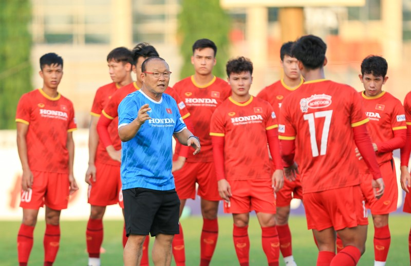

Tin Bóng Đá Việt Nam mới nhất
Văn Toàn,Hoàng Đức dương tính với covid
11/01/2022 17:58 GMT+7
TTO – Ngày 11-1, thông tin từ Liên đoàn Bóng đá Việt Nam (VFF) cho biết hai tuyển thủ Văn Toàn, Hoàng Đức có kết quả dương tính với COVID-19 và nguy cơ không thể lên tập trung đội tuyển Việt Nam vào ngày 13-1 tới.
Tiến Linh mắc COVID-19, nguy cơ vắng mặt trận Việt Nam vs Australia
Thứ Năm, 13/01/2022 09:17:56 +07:00
(VTC News) - Tiền đạo Nguyễn Tiến Linh mắc COVID-19 ngay trước ngày đội tuyển Việt Nam tập trung trở lại để chuẩn bị cho vòng loại thứ ba World Cup 2022 khu vực châu Á.
Ông Park chọn ai thay hai chân sút thiện chiến do mắc COVID-19?
Thứ Sáu, ngày 14/01/2022 00:08 AM (GMT+7)
Sau khi Văn Toàn không may nhiễm COVID-19, đến lượt chân sút Nguyễn Tiến Linh bị cách ly khiến ông Park mệt mỏi với hàng công đội tuyển, dù vẫn còn ba tiền đạo và vừa gọi tăng cường hai tân binh.
Tin Bóng Đá Việt Nam Vòng Loại Thứ 3 World Cup
Trận Việt Nam -Trung Quốc được đón 20.000 cổ động viên vào sân Mỹ Đình
Thứ Sáu, ngày 14/01/2022 00:07 AM (GMT+7)
Ngày 13/1, UBND thành phố Hà Nội đã có văn bản đồng ý với đề xuất của Bộ VH-TT&DL về việc cho CĐV vào sân Mỹ Đình ở trận đấu của đội tuyển Việt Nam với Trung Quốc tại Vòng loại cuối World Cup 2022 khu vực châu Á.
HLV tuyển Trung Quốc: 'Thắng Việt Nam thì mới có thể ăn Tết vui vẻ'
Thứ Sáu, ngày 14/01/2022 00:08 AM (GMT+7)
ĐT Trung Quốc đã hội quân để hướng tới 2 trận vòng loại World Cup 2022 khu vực châu Á diễn ra vào cuối tháng này và đầu tháng sau. Có vẻ như thầy trò Li Xiaopeng đang tập trung toàn lực cho trận gặp ĐT Việt Nam vào ngày 1/2.
Tuyển Việt Nam chuẩn bị cho vòng loại thứ 3 World Cup 2022 khu vực châu Á
Thứ Năm, 13/01/2022 16:45 | Bóng đá
Ngày 13/1, đội tuyển Việt Nam đã hội quân trở lại để tiếp tục chuẩn bị cho 2 trận đấu kế tiếp tại Vòng loại thứ 3 FIFA World Cup 2022, gặp đội tuyển Australia trên sân khách vào ngày 27/1 và gặp đội tuyển Trung Quốc trên sân nhà vào ngày 1/2.